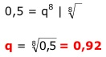

Aufgabe 196 Jod 131 hat eine Halbwertzeit von 8 Tagen, das heißt, die Strahlung ist auf die Hälfte gefallen. Wie hoch ist der Abnahmefaktor q pro Tag? Nach wie viel Tagen beträgt die Strahlungsstärke noch 1 %? Abnahmefaktor = 0,5 t8 = t0 * q8 0,5 = 1 * q8  tn = t0 * qn 0,01 = 1 * 0,92n Logarithmieren: lg 0,01 = lg 0,92n lg 0,01 = n * lg 0,92 |:lg 0,92 lg 0,01 -2 n = --------- = ----------- = 55,2 Tage ---> 56 Tage lg 0,92 - 0,0362